Круги Эйлера - Венца
Цели
- Дать понятие кругам Эйлера Венца
- Решение логических задач с помощью кругов Эйлера
Инструменты:
- ОС Windows
- Браузер
Выдающийся ученый Леонард Эйлер (Euler) (годы жизни 1707–1783 г.г.), по происхождению швейцарец, однако основную часть своей жизни работал в России.
Почти половину своей жизни Эйлер прожил в России. Неоспорима его заслуга в становлении российской науки. В 1726 году Петр I пригласил Эйлера в Петербургскую Академию наук и в 1727 году ученый переехал в Россию. В период с 1731 по 1741, а также с 1766 года был академиком Петербургской академии наук. В период с 1741 по 1766 годы ученый работал в Берлине, при этом он оставался почётным членом Петербургской Академии. Эйлер быстро выучил русский язык и часть его работ, в частности, ряд учебников написаны им на русском языке.
Эйлер был не только выдающимся математиком. Всего Эйлер написал более 800 работ. Сферы его интересов – это математический анализ, дифференциальная геометрия, теория чисел, приближенные вычисления. Кроме этого, Эйлер публиковал работы по небесной механике, математической физике, оптике, баллистике, кораблестроению, а также теории музыки и других дисциплин.
Человек, достаточно серьезно изучающий математику, понимает, что математика – это не определенная область науки, состоящая из чисел и вычислений. Это образ мышления, универсальный инструмент, который позволяет решать задачи не только в точных науках, но даже в искусстве, биологии, медицине, химии, изучении языков.
Что касается математики, то XVIII век заслуженно считается «веком Эйлера» .
Основная заслуга Эйлера – это систематизация знаний в области математики и построение единой системы. Если до Эйлера, исследования в области математики были достаточно разрозненны и не всегда согласовались друг с другом, то Эйлер собрал отдельные части (алгебра, геометрия, тригонометрия и другие математические дисциплины) в единую систему. Кроме этого, Эйлер фактически создал новые математические дисциплины. К ним относятся теория чисел, математическая физика и ряд других.
Именно он предложил использовать графическое изображение операций над множествами. Круги Эйлера решение любой, даже самой сложно составленной задачи, способны изобразить наглядно.
В таблице приведены запросы к поисковому серверу
Расположите обозначения запросов в порядке возрастания количества страниц, которые найдет поисковый сервер по каждому запросу. Для обозначения логической операции ИЛИ в запросе используется символ |, а для логической операции И – символ &.
1.Франция | Испания | История
2.Франция & Карта & История
3.Франция | История
4.Франция & История
Решение:
В запросах у нас встречается 4 разных с слова — Франция, Испания, История и Карта. Для решения мы будем использовать очень наглядный инструмент — круги Эйлера. Итак, каждое слово из запросов мы представим в виде круга.
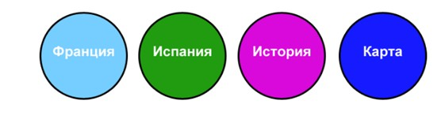
При этом, если у нас два слова в запросе объединяются логической операцией ИЛИ (кстати, эту операцию называют дизъюнкция), то в результате получается новая фигура, объединяющая две исходных. Давайте посмотрим это на примере:
Возьмем такой запрос — Франция | Испания и построим его графический эквивалент
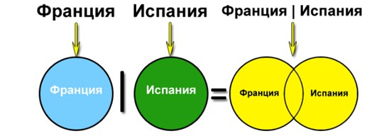
Теперь рассмотрим, что произойдет, если слова объединить логической операцией И (эту операцию называют коньюкция
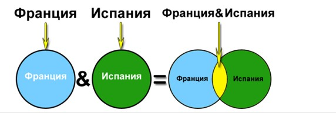
Как мы видим, в данном случае полученная фигура (она выделена желтым
цветом) имеет меньше площадь, чем площади исходных слов. Значит, количество
страниц, найденных по запросу с использованием логической операции И будет
меньше, чем для отдельных слов. Вот теперь мы готовы к окончательному решению задачи. Для этого построим
графический эквивалент для каждого запроса. Мы получим 4 фигуры, потом нам
нужно будет просто сравнить их площади, а затем расставить их в требуемом
порядке. Желтым цветом выделены фигуры, соответствующие запросу. 1) Франция | Испания | История
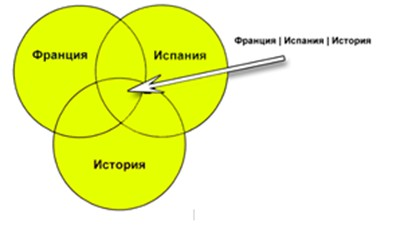
Франция |
Испания | История 2) Франция & Карта & История
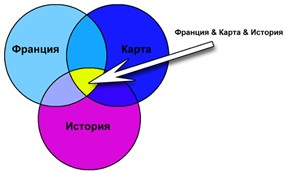
Франция & Карта & История 3) Франция | История
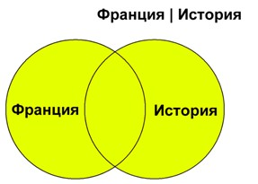
Франция |
История 4) Франция & История
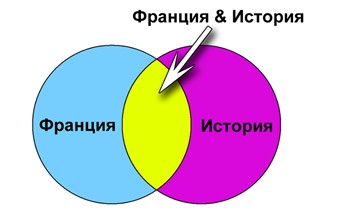
Франция & История Если теперь посмотреть на полученные фигуры и сравнить площади желтых
участков, то довольно просто расположить их в порядке возрастания:
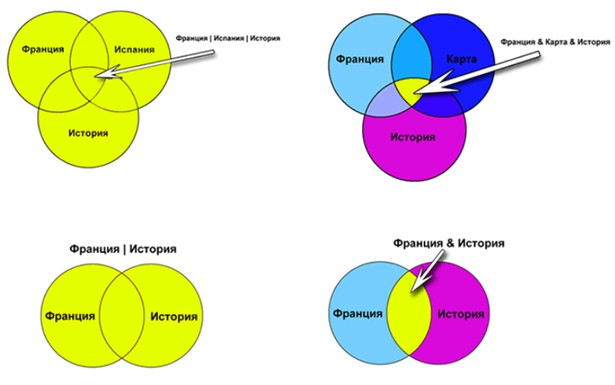
Франция & Карта & История Франция & История Франция | История Франция | Испания | История. А значит правильный ответ будет 2431 Рассмотрим еще одну задачу 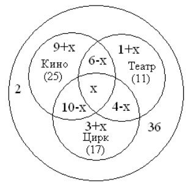
Не были ни в театре, ни в кино, ни в цирке -- 2 чел.
В последнем примере покажем сразу круги Эйлера В таблице приведены запросы к поисковому серверу. Для каждого запроса
указан его код – соответствующая буква от А до Г. Расположите коды запросов
слева направо в порядке убывания количества страниц, которые найдёт поисковый
сервер по каждому запросу. Для обозначения логической операции «ИЛИ» в запросе
используется символ |, а для логической операции «И» – &. А(Муха & Денежка) | Самовар БМуха & Денежка & Базар & Самовар ВМуха | Денежка | Самовар ГМуха & Денежка & Самовар Решение: Подробно решение подобных задач рассмотрено выше, здесь показаны только итоговые фигуры:
Сколько человек побывало и в кино, и в театре, и в цирке?
Решение:
Обозначим количество ребят, побывавших и в кино, и в театре, и в цирке -- X.
Построим диаграмму и узнаем количество ребят в каждой области:
Значит, 36-2=34 чел. побывали на мероприятиях.
В кино и театр сходило 6 чел., значит, только в кино и театр (6-Х) чел.
В кино и цирк сходило 10 чел., значит, только в кино и цирк (10-Х) чел.
В театр и цирк сходило 4 чел., значит, только в театре и цирк (4-Х) чел.
В кино сходило 25 чел., значит, из них только в кино сходило 25-(10-Х)-(6-Х)-Х=(9+Х) .
Аналогично, только в театр сходило (3+Х) чел.
Только в цирк сходило (3+Х) чел.
Итак, сходили в театр, кино и цирк:
(9+Х)+(1+Х)+(3+Х)+(10-Х)+(6-Х)+(4-Х)+Х=34;
33+Х=34;
Х=1.
Т.е. только один человек сходил и в театр, и в кино, и в цирк.
Ответ: 1.
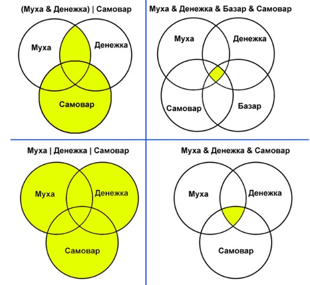
Задание 2. Решите
задачу. Решение оформите в конспект. Работа по вариантам: Вариант Номер
по списку 1 3 11 19 25 33 2 4 12 20 26 34 3 5 13 21 27 35 4 6 14 22 28 36 5 7 1 17 29 6 8 2 18 30 7 9 15 23 31 8 10 16 24 32 9 пример на 4 (проще) 10 пример на 4 (проще)
Задача 1. Однажды учеников спросили, кто из них любит
математику, кому нравится русский язык, а кому физика. Оказалось, что из 36
учеников 2 не любят ни математику, ни русский, ни физику. Математика нравится
25 ученикам, русский язык- 11, физика – 17 ученикам; и математика, и русский-
6; и математика, и физика- 10; русский язык и физика - 4. Сколько человек любят все три предмета? Задача 2. Из
100 студентов 30 изучают испанский язык,
30 - немецкий, 50 - английский, 15 - испанский и немецкий, 25 -
немецкий и английский, 13- испанский и английский и 10 все три языка. Сколько студентов 1) не изучают ни одного языка?, 2) только английский язык? Задача 3. В пансионате отдыхали люди. 12 - любят играть в
шашки, 14 в карты, 12 - любители домино. К тому же 2 из них любят и шашки и
карты, 4 человека играют в карты и домино, а 3 любят шашки и домино А еще 3
человека любят играть во все игры. Сколько всего человек? Задача 4. В классе 38 учеников. Из них 16 увлекаются математикой, 17
— физикой, 18 — историей. Увлекаются двумя предметами — математикой и физикой
— четверо, математикой и историей — трое, физикой и историей — пятеро. Трое не
увлекаются ни математикой, ни физикой, ни историей. Сколько учеников увлекается двумя предметами, сколько одним, сколько
тремя? Задача 5. В классе 20 человек. Из них 12 посещают спортивные секции, 7
человек – музыкальную школу и трое увлекаются ни музыкой, ни спортом. Нарисуй круги Эйлера. Выдели ту часть рисунка, в которой
находятся: 1)те, кто не посещают спортивную секцию и музыкальную школу; 2)спортсмены-музыканты; 3) «чистые» музыканты; 4) те, кто не посещает спортивную секцию. Задача 6. На полке стояло 26 волшебных книг по заклинаниям, все они были
прочитаны. Из них 4 прочитал и Гарри Поттер, и Рон. Гермиона прочитала 7 книг,
которых не читали ни Гарри Поттер, ни Рон, и две книги, которые читал Гарри
Поттер. Всего Гарри Поттер прочитал 11 книг. Сколько книг прочитал только Рон? Задача 7. На 3 курсе факультета
обучается 81 студент. Многие из них выбрали одинаковые
дисциплины, посещают одни и те же лекции и хорошо знают друг друга. б) 43
студента посещают лекции по философии, в)32 - по логике и г)41 - по
естествознанию. д) Философию и логику выбрали 11 человек. е) Философию и
естествознание посещает 21 студент, ж)а логику и естествознание - 16. з) 4
человека выбрали только философию и логику. Сколько студентов посещают
лекции: 1) по всем трём предметам, 2)только по философии и
естествознанию, 3)только по логике и
естествознанию, 4)только по философии, 5)только по
естествознанию, 6)только по логике, 7)не выбрали ни одну из
этих дисциплин. Задача 8. В классе всего 36 человек.
Учащиеся посещают математический, физический и химический кружки, причем,
математический кружок посещают 17 человек, физический - 13 человек, химический
- 11 человек. Кроме того, известно, что все три кружка посещают 2 человека,
математический и физический -7, математический и химический - 6, физический и
химический - 3. Сколько человек не посещают никаких кружков? Задача 9. В
поход ходили 75 % учеников класса, а
на экскурсии было 68 %, причем каждый
был в походе или на экскурсии.
Сколько процентов класса были и там,
и там? Задача 10. "Ёлки" и "Неудержимый":
Некоторые ребята из нашего класса любят ходить в кино. Известно, что 12 ребят
смотрели фильм «Ёлки», 9 человек – фильм «Неудержимый», из них 6 смотрели и
«Ёлки», и «Неудержимый». Сколько человек смотрели только фильм «Неудержимый»? 9
моих друзей любят бананы, 8 –
апельсины, а 7 – сливы, 5 –
бананы и апельсины, 3 – бананы и
сливы, 4 – апельсины и сливы, 2
– бананы, апельсины и сливы. Сколько
у меня друзей?
Задача 12. В
пионерском лагере «Дубки» в смене актива
отдыхали: 30 отличников, 28 победителей
олимпиад и 42 спортсмена. 10 человек
были и отличниками и победителями олимпиад,
5 — отличниками и спортсменами, 8 —
спортсменами и победителями олимпиад, 3 —
и отличники, и спортсмены, и победители
олимпиад. Сколько
ребят отдыхали в лагере? Задание 3. Решите
задачу. Решение оформите в конспект. Для выполнения задния, вам
надо ознакомится с правилами Высказывания A, B, C истинны для точек, принадлежащих прямоугольнику, треугольнику и кругу соответственно. Истинно ли высказывание 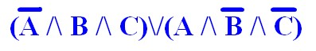 для всех точек, принадлежащих только области, выделенной красным цветом на рисунке? При
ответе на этот вопрос следует помнить приоритет логических операций, а
также интерпретацию операторов алгебры логики высказываний в теории
множеств. Перепишем в символике фигур Эйлера, множества A, B и C
выглядят так: 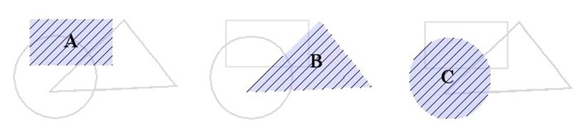
Для решения надо перерисовать картинку 5 раз и соответственно закрасить области для решения логического выражения. 1,7,13,19,25,31 2,8,14,20,26,32 3,9,15,21,27,33 4,10,16,22,28,34 5,11,17,23,29,35 6,12,18,24,30,36 Задание №1 Высказывания
А, В, С истины для точек, принадлежащих кругу, треугольнику или
прямоугольнику соответственно. Определите по рисунку истинность
следующих высказываний: Задание №2 Высказывания
А, В, С истины для точек, принадлежащих кругу, треугольнику или
прямоугольнику соответственно. Определите по рисунку истинность
следующих высказываний: Задание №3 Высказывания
А, В, С истины для точек, принадлежащих кругу, треугольнику или
прямоугольнику соответственно. Определите по рисунку истинность
следующих высказываний: Задание №4 Высказывания
А, В, С истины для точек, принадлежащих кругу, треугольнику или
прямоугольнику соответственно. Определите по рисунку истинность
следующих высказываний: Задание №5 Высказывания
А, В, С истины для точек, принадлежащих кругу, треугольнику или
прямоугольнику соответственно. Определите по рисунку истинность
следующих высказываний: Задание №6 Высказывания
А, В, С истины для точек, принадлежащих кругу, треугольнику или
прямоугольнику соответственно. Определите по рисунку истинность
следующих высказываний:
11 пример на 4 (проще)
Графическое представление логических высказываний
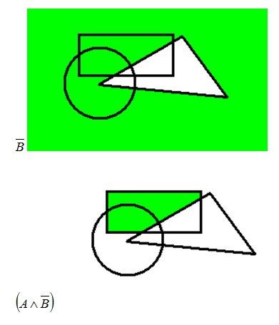
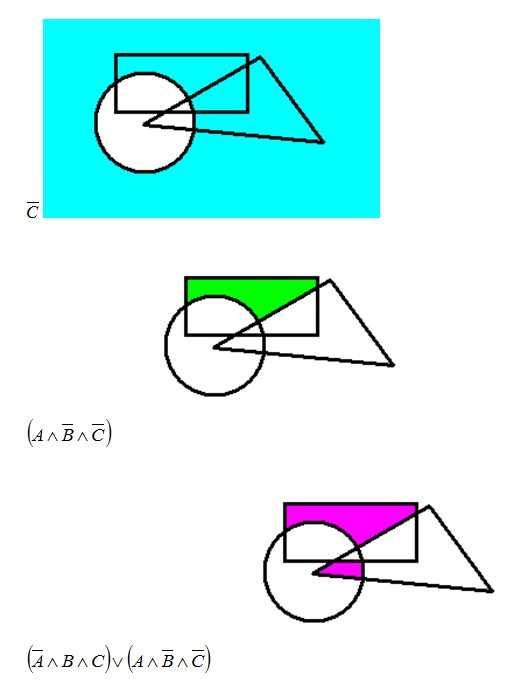
Варинат
Номер по журналу
1
2
3
4
5
6
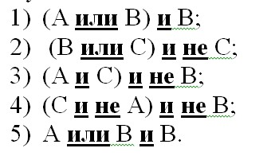 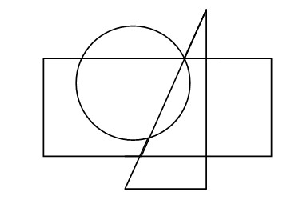
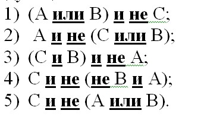 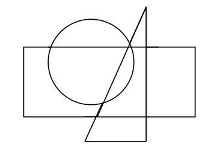
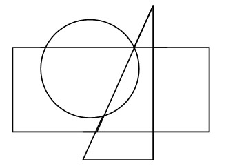
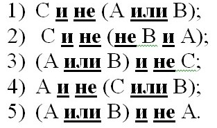 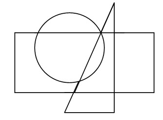
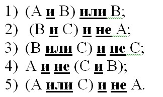 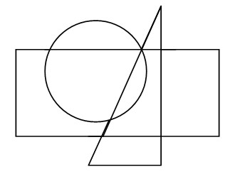
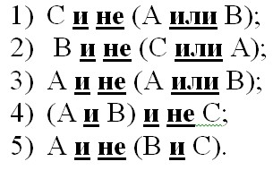